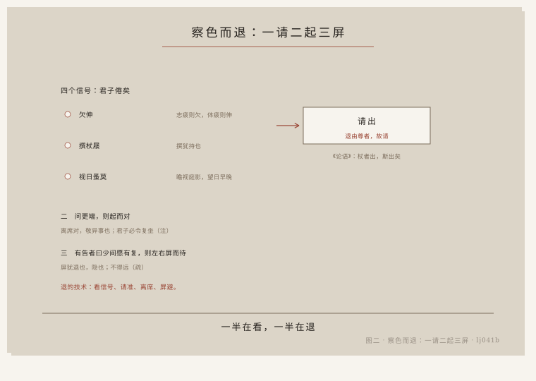

曲礼上 · 一·四十三 · 第 41 课
这一节讲侍坐时看尊者的意思：尊者打呵欠、伸腰、拿杖拿鞋、看日头早晚，侍坐的人就该请退；尊者另起话头，要离席再答；有人来禀「请稍闲，有话要白」，侍者就退到左右回避。
说什么事：侍坐于君子，君子欠伸，撰杖屦，视日蚤莫，侍坐者请出矣；君子问更端，则起而对；若有告者曰「少间，愿有复也」，则左右屏而待。
落在哪一层：教。上节讲三藏，这节讲「怎么看出该走」，以及「怎么退」。
为何编在此位：客礼最难的是收尾；此节把「退」写得比「进」还细。
【经】侍坐於君子，君子欠伸，撰杖屨，視日蚤莫，侍坐者請出矣。侍坐於君子，君子問更端，則起而對。侍坐於君子，若有告者曰：「少間，願有復也。」則左右屏而待。
欠伸 郑注：「以君子有倦意也。」疏：「君子志疲则欠，体疲则伸。」
撰 郑注：「撰犹持也。」疏：「君子自执杖在坐，著屦升堂，脱之在侧，若倦则自撰持之也。」
视日蚤莫 疏：「君子或瞻视其庭影，望日蚤晚也。」
请出 疏：「礼，卑者贱者请进不请退，退由尊者。」引《论语》「杖者出，斯出矣」。
更端 郑注：「离席对，敬异事也，君子必令复坐。」疏：「更端，别事也，谓向语已毕，更问他事。」
少间愿有复 郑注：「复，白也。言欲须少空间，有所白也。屏犹退也，隐也。」
侍坐于君子，君子打呵欠、伸腰、拿杖拿鞋、看日头早晚，侍坐的人就该请退。君子另起一件事问，就离席再答。若有人来禀「请稍闲，有事要白」，侍者就退到左右回避。
三小段：一段教「察色而退」，一段教「异事则起」，一段教「人有机密则屏」。侍者的本事，一半在看，一半在退。
第一层 四个动作是一句话：我倦了 欠伸是身倦，撰杖屦是欲起，视日是怕晚。四样凑齐，尊者不必说「你走吧」——礼把这句话交给了他的身体。
第二层 「请出」而不是「退出」 疏说得极准：「卑者贱者请进不请退，退由尊者。」——走要尊者准。故曰「请出」，是把决定权交回去。引《论语》「杖者出，斯出矣」：老人起了，你才跟着起。
第三层 问更端则起：换事就换身体 郑注「离席对，敬异事也」。同一场话里换一件事，要重新起立——因为「敬」是按事计的，事新则敬新。
第四层 左右屏而待：别人有话，你先消失 郑注「屏犹退也，隐也」。有人要单独禀事，侍者退到左右，不远不近。此条与一·二十九「不掩人之私」同一血脉：礼的退，是给人留出说话的地方。
与今日何干 今日不会退：会议拖到人打呵欠，访客不走，主人不好意思；领导接电话，下属仍坐着听。此节把「退」的技术写全了：看信号、请准、离席、屏避。
| 左 | 右 |
|---|---|
| 君子欠伸 | 志疲则欠，体疲则伸 |
| 撰杖屦 | 撰犹持也；倦则自持 |
| 视日蚤莫 | 瞻视庭影，望日早晚 |
| 侍坐者请出 | 卑者请进不请退，退由尊者 |
| 问更端，则起而对 | 离席对，敬异事 |
| 有告者少间愿有复 | 则左右屏而待，不得远 |
画庭中一段日影：日影已斜过长廊的石阶，阶侧立着一根短杖与一双脱下的鞋，杖与鞋并置；庭角一扇小门外有两人影的淡痕，影止于门外三尺。不画人，不写文字。赭色只在杖头与鞋鼻。
